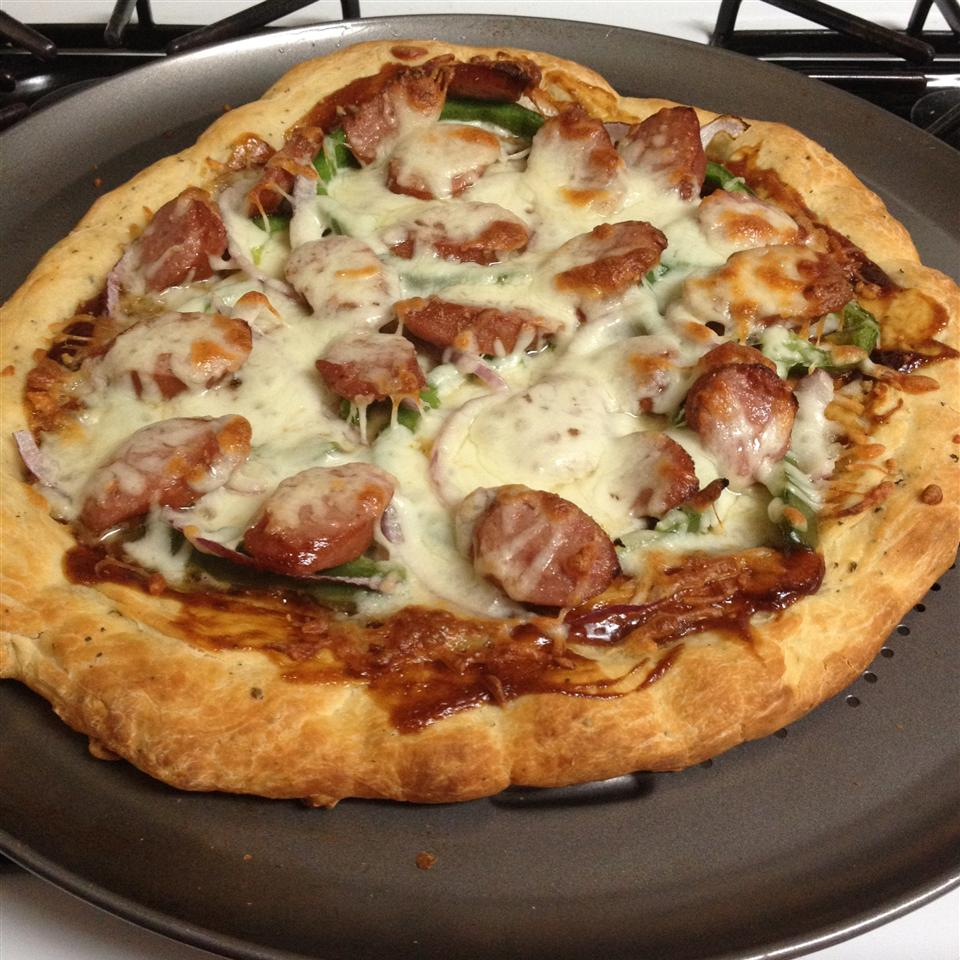

Barbecue Smoked Sausage Pizza

Put a summer spin on pizza with smoked sausage and barbecue sauce.
Ingredients
- 1 (12 ounce) package Hillshire Farm® Beef Smoked Sausage
- 2 (14 ounce) packages 12-inch size Italian pizza crust
- ⅔ cup prepared barbecue sauce
- 1 cup thinly sliced red onion
- 1 green bell pepper, seeded, cut into thin strips
- 2 cups shredded mozzarella cheese
Steps
- Preheat oven to 425 degrees F. Cut sausage on an angle in 1/4-inch slices. Place crusts on 2 baking sheets; spread 1/3 cup barbecue sauce on each crust.
- Top each pizza with 1/2 each of sausage, red onion, pepper and mozzarella cheese.
- Bake 20 minutes or until crust is crispy and cheese is lightly browned. Cut each pizza into 8 slices.